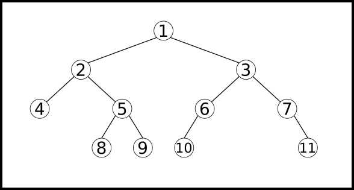
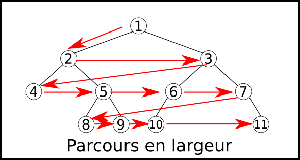

Arbres Binaires : définitions et propriétés
Les listes, piles et files que nous avons croisé jusqu'ici sont utilisées pour représenter de structures pouvant être énumérées séquentiellement. Elle sont particulièrement efficcaces lorsqu'il s'agit d'accéder au premier élément (ou au dernier selon l'implémentation). Elles ne le sont pas contre pas quand il s'agit d'accéder à une élément à une position arbitraire dans la structure, car il faut parcourir toute la liste/pile/file jusqu'à la position recherchée, ce qui donne un temps d'accès proportionnel à la taille de la structure (donc en \(\mathbb{O}(n)\)).
Structures arborescentes
Les structures arborescentes, c'est-à-dire sous forme d'arbre, sont une autre forme de structures chaînées dans laquel l'accès à un élément se fait potentiellement bien plus rapidement qu'avec les listes chaînées.
Ces types de structures arborescentes sont omniprésentes en informatiques, ne serait-ce que par l'organisation du système de fichier :

Structure arorescente
Une structure arborescente est une structure chaînéee construite à partir d'un point de départ qui se scinde en plusieurs branches à chaque étapes.
Arbres Binaires
Définitions et vocabulaire
définition : Arbre Binaire
Un arbre binaire est un cas particulier de structure arborescente ou chaque position ouvre sur exaactement deux branches. Plus précisemment, un arbre binaire est un ensemble fini de noeuds correspondant à l'un des deux cas suivants :
- Soit l'arbre est vide, c'est-à-dire qu'il ne contient aucun noeud.
- Soit l'arbre n'est pas vide, et ses noeuds sont structurés de la façon suivante :
- un noeud est appelé la racine de l'arbre ;
- les noeuds restants sont séparés en deux sous-ensembles qui forment récursivement deux sous-arbres binaires appelés respectivemment sous-arbre gauche et sous-arbre droit ;
- la racine est reliée à chacune des racines de ces sous-arbres gauches et droits (à conditions qu'ils ne soient pas vides).
Exemples et contre-exemples d'arbres binaires

L'arbre de gauche n'est pas un arbre binaire : 6 sous-arbres sont-rattachés à \(A\), les sous-arbres de racines \(B,C,D,E,F,G\).
L'arbre de droite est bien un arbre binaire, de chaque noeud partent deux sous-arbres, éventuellement vides.
Vocabulaire des arbres
On considère l'arbre binaire ci-dessous :

- La taille de l'arbre est \(4\), c'est le nombre de noeuds qui le compose.
- Le noeud racine est le noeud \(1\).
- Le sous-arbre gauche à partir de \(1\) contient deux noeuds (\(2\) et \(3\)), le sous-arbre droit un seul (\(4\)).
- le noeud \(1\) possède deux fils : son fils gauche est \(2\) et son fils droit est \(4\).
- Le sous-arbre gauche à partir de \(2\) n'est pas vide (il contient le noeud \(3\)), le sous-arbre droit lui l'est.
- Le noeud parent du noeud \(3\) est le noeud \(2\).
- Les deux sous-arbres à partir de \(3\) sont vides, touts comme ceux de \(4\). On dira que les noeuds \(3\) et \(4\) sont des feuilles de l'arbre.
Remarques
Les arbres binaires sont utilisés pour traiter des données. Chaque noeud peut donc être représenté par la donnée qu'il contient. Ainsi, dans les arbres ci-dessus :
- un contient des valeurs numériques (\(1\), \(2\), \(3\) et \(4\)) ;
- l'autre contient des caractères (\(A\) à \(L\)).
Exercice
Pour chacun des arbres binaires ci-dessous, préciser sa taille, sa racine ainsi que les noeuds feuilles :
Arbre 1

Arbre 2
- Arbre 1 :
- taille : 7
- racine : « A »
- feuilles : « D », « E », « G »
- Arbre 2 :
- taille : 7
- racine : « P »
- feuilles : « C », « X », « N »
Exercice
Dessiner tous les arbres binaires ayant respectivement 3 et 4 noeuds.
Exercice
Sachant qu'il y a 1 arbre binaire vide, 1 arbre binaire contenant 1 noeud, 2 arbres binaires contenant 2 noeuds, 5 arbres binaires contenant 3 noeuds, et 14 arbres binaires contenant 4 noeuds, caclculer le nombre d'arbres binaires contenant 5 noeuds, sans chercher à les construire tous.
Un arbre de taille 5 dispose d'un noeud racine et de 4 noeuds, pouvant être répartis de la manière suivante :
- 4 noeuds dans le sous-arbre gauche, et 0 dans le sous-arbre droit ;
- 3 noeuds dans le sous-arbre gauche, et 1 dans le sous-arbre droit ;
- 2 noeuds dans le sous-arbre gauche, et 2 dans le sous-arbre droit ;
- 1 noeud dans le sous-arbre gauche, et 3 dans le sous-arbre droit ;
- 0 noeud dans le sous-arbre gauche, et 4 dans le sous-arbre droit.
On en déduit que le nombre d'arbres différents à 5 noeuds est :
Hauteur d'un arbre
Définition : hauteur d'un arbre
La hauteur d'un arbre est égale au nombre maximal de noeuds reliant la racine aux feuilles, les extrémités étant comprises.
Si un arbre est de taille \(N\) et de hauteur \(h\), on a la relation suivante :
Démonstration
Dans le cas d'un arbre ayant à chaque noeud au moins un de ses sous-arbre vide :
Il est évident que dans ce cas la hauteur de l'arbre est égale à sa taille, d'où \(h\leqslant N\).
dans le cas d'un arbre binaire parfait, c'est-à-dire dont toutes les feuilles sont situées à la même distance de la racine :
La taille est alors égale à
D'où l'inégalité recherchée.
Hauteur et récursivité
La hauteur d'un arbre peut-aussi être définie récursivement :
- la hauteur d'un arbre vide est 0 ;
-
la hauteur d'un arbre est égale à un plus le maximum de la hauteur des deux sous-arbres de la racine :
\[ h = 1 + max(hauteur(Gauche), hauteur(Droit)) \]
Implémentation d'arbres en Python
Il existe bien entendu différentes façons d'implémenter une structure d'arbre binaire en Python. Cependant, la méthode la plus simple est d'utiliser le paradigme Objet afin de représenter des noeuds :
class Node() :
def __init__(self, valeur, gauche, droit) :
self.valeur=valeur
self.gauche = gauche
self.droit = droit
None.
Exemple d'utilisation des objets Node
On considère l'arbre binaire ci-dessous :
Une représentation en Python de cet arbre est alors :
tree = Node(1,
Node(2,
Node(3, None, None),
None),
Node(4, None, None))
Exercice
Donner le code de représentation de chacun des arbres ci-dessous en Python :
Arbre 1
Arbre 2
- Arbre 1 :
arbre1 = Node("A", Node("B", Node("D",None,None),#FG Node("E",None,None),#FD ), Node("C",#FD None,#FG Node("F",#FD None,#FG Node("G", None, None)#FD ) ) ) - Arbre 2 :
arbre2 = Node("P", Node("A", Node("R", Node("C", None, None), None ), Node("I", Node("X", None, None), Node("N", None, None) ) ), None )
Exercice : Fonction hauteur
Coder une fonction hauteur(t) calculant la hauteur d'un arbre t qui lui est passé en argument (indice : récursivité).
def hauteur(t) :
if t is None :
return 0
else :
return 1 + max(hauteur(t.gauche), hauteur(t.droit))
Exercice : Fonction taille
Coder une fonction taille(t) calculant la taille d'un arbre t qui lui est passé en argument (indice : récursivité).
def taille(t) :
if t is None :
return 0
else :
return 1 + taille(t.gauche)+taille(t.droit)
Exercice : Fonction estVide(tree)
Coder une fonction estVide(tree) renvoyant True si l'arbre est vide, et False sinon.
def estVide(t) :
return t is None
Arbres doublement chaînés
Il est parfois - mais pas toujours- nécessaire de mémoriser le noeud parent de chaque noeud. On parle alors d'arbre doublement chaînés. L'implémentation en POO de la classe Node est alors quasiment identique, en rajoutant seulement l'attribut parent :
class Node() :
def __init__(self, valeur, gauche, droit, parent) :
self.valeur=valeur
self.gauche = gauche
self.droit = droit
self.parent = parent
Parcours d'arbres
Pour utiliser un arbre, il faut le parcourir. Or il existe plusieurs ordres de parcours, qui tous ont un intérêt différent. Pour illustrer ces ordres de parcours, nous utiliserons comme exemple le même arbre, dont on veux afficher les différents noeuds :

Parcours en profondeur ( DFS ou Depth-First Search)
Les parcours en profondeur sont des parcours qui seront traités de manière récursives, en partant de la racine. Il en existe trois type principaux :
Parcours Préfixe
On appelle parcours préfixe un parcours où les noeuds seront affichés dans l'ordre suivant
- on affiche la racine ;
- ensuite on affiche récursivement le sous-arbre gauche ;
- enfin on affiche récursivement le sous-arbre droit.
Le parcours est dans l'ordre noeud - gauche - droit
Exemple
Sur l'arbre ci-dessus, on a donc parcouru dans l'ordre suivant :

L'ordre d'affichage des noeuds est donc : 1, 2, 4, 5, 8, 9, 3, 6, 10, 7, 11.
Parcours Infixe
On appelle parcours infixe un parcours où les noeuds seront affichés dans l'ordre suivant
- on affiche récursivement le sous-arbre gauche ;
- ensuite on affiche la racine ;
- enfin on affiche récursivement le sous-arbre droit.
Le parcours est donc dans l'ordre gauche - noeud -droit.
Exemple
Sur l'arbre ci-dessus, on a donc parcouru dans l'ordre suivant :

L'ordre d'affichage des noeuds est donc : 4, 2, 8, 5, 9, 1, 10, 6, 3, 7, 11.
Parcours Suffixe (ou postfixe)
On appelle parcours suffixe un parcours où les noeuds seront affichés dans l'ordre suivant
- on affiche récursivement le sous-arbre gauche ;
- ensuite on affiche récursivement le sous-arbre droit ;
- enfin on on affiche la racine.
Le parcours est donc dans l'ordre gauche - droit - noeud.
Exemple
Sur l'arbre ci-dessus, on a donc parcouru dans l'ordre suivant :
L'ordre d'affichage des noeuds est donc : 4, 8, 9, 5, 2, 10, 6, 11, 7, 3, 1.
Exercice
Pour chacun des arbres suivants, donner l'affichage par :
- un parcours préfixe ;
- un parcours infixe ;
- un parcours suffixe.
Arbre 1
Arbre 2

- Arbre 1 :
- parcours Préfixe :
A B H - parcours Infixe :
B A H - parcours Suffixe :
B H A
- parcours Préfixe :
- Arbre 2 :
- parcours Préfixe :
A B C D E F G H I J K L - parcours Infixe :
D C E B G F A I J H L K - parcours Suffixe :
D E C G F B J I L K H A
- parcours Préfixe :
Algorithmes et codage des parcours en profondeur
Codage des arbres
Les deux arbres précédents peucvent être codés en Python de la manière suivante :
arbre1 = Node('A',
Node('B', None, None),
Node('C', None, None)
)
arbre2 = Node('A',
Node('B',
Node('C',
Node('D', None, None),
Node('E', None, None)),
Node('F',
Node('G', None, None),
None)
),
Node('H',
Node('I',
None,
Node('J', None,None)),
Node('K',
Node('L', None,None),
None)
)
)
Exemple : algorithme de parcours préfixe
Un algorithme en langage naturel permettant d'afficher les noeuds d'un arbre par un parcours préfixe peut-être écrit comme suit :
visiterPréfixe(Arbre A) :
Afficher (A)
Si nonVide (gauche(A))
visiterPréfixe(gauche(A))
Si nonVide (droite(A))
visiterPréfixe(droite(A))
Sa traduction en Python est la suivante :
def visitePrefixe(tree) :
print(tree.valeur, end=" ")
if not(estVide(tree.gauche)) :
visitePrefixe(tree.gauche)
if not(estVide(tree.droit)) :
visitePrefixe(tree.droit)
Exercice : Parcours infixe
Créer une fonction visiteInfixe permettant d'afficher les noeuds d'un arbre par un parcours infixe. La fonction sera testée sur les deux arbres donnés plus haut.
def visiteInfixe(tree) :
if not(estVide(tree.gauche)) :
visiteInfixe(tree.gauche)
print(tree.valeur, end=" ")
if not(estVide(tree.droit)) :
visiteInfixe(tree.droit)
Exercice : Parcours suffixe
Créer une fonction visiteSuffixe permettant d'afficher les noeuds d'un arbre par un parcours suffixe. La fonction sera testée sur les deux arbres donnés plus haut.
def visiteSuffixe(tree) :
if not(estVide(tree.gauche)) :
visiteSuffixe(tree.gauche)
if not(estVide(tree.droit)) :
visiteSuffixe(tree.droit)
print(tree.valeur, end=" ")
Parcours en largeur
Le parcours en largeur d'un arbre consiste à parcourir chaque niveau de l'arbre de gauche à droite, en partant de la racine.

Sur cet arbre, le parcours en largeur affichera les noeuds dans l'ordre suivant : 1 2 3 4 5 6 7 8 9 10 11
Exercice : application directe
Donner le résultat d'un parcours en largeur des deux arbres des exercices précédents.
- Arbre 1 :
A B H - Arbre 2 :
A B H C F I K D E G J L
Algorithme de parcours en largeur
Le parcours en largeur n'est pas effectué récursivemment. Il fonctionne avec le principe d'une file :
ParcoursLargeur(Arbre A) {
f = FileVide
enfiler(Racine(A), f)
Tant que (f != FileVide) {
noeud = defiler(f)
Afficher(noeud)
Si (gauche(noeud) != null) Alors
enfiler(gauche(noeud), f)
Si (droite(noeud) != null) Alors
enfiler(droite(noeud), f)
}
}
Exercice
Implémenter une fonction visiteLargeur(tree), utilisant une structure de file basée sur les listes python, et utilisant :
list.insert(0, e)pour enfiler l'élémenteà la position 0 ;list.pop()pour défiler le dernier élément de la file.
def visiteLargeur(tree) :
f = []
f.insert(0, tree)
while f!= [] :
noeud = f.pop()
print(noeud.valeur, end=" ")
if noeud.gauche :
f.insert(0, noeud.gauche)
if noeud.droit :
f.insert(0, noeud.droit)